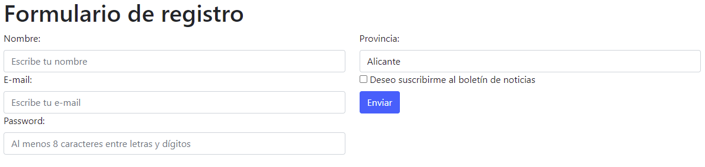

Ejercicios de aprendizaje
Ejercicio_CSS 1 :
Partiendo del documento HTML que puedes encontrar aquí, aplica un estilo CSS al primer párrafo utilizando el primero de los métodos descritos. Dicho estilo consistirá en poner el texto de color verde y con tamaño de letra de 15 puntos. El código CSS necesario es el siguiente:
color:green; font-size:15pt;
Observa que el formato se aplica sólo al primer párrafo, que es el que tiene la etiqueta style. Guarda el archivo con el nombre ejercicio1.html.

Ejercicio_CSS 2:
Utilizando el documento HTML del ejemplo anterior, manteniendo los cambios realizados en el ejercicio 1, aplica un estilo CSS a todos los párrafos utilizando el segundo de los métodos descritos (hoja de estilo interna). Dicho estilo consistirá en poner el texto de color rojo y con tamaño de letra de 8 puntos. El código CSS necesario es el siguiente:
p {
color:red; /*Color rojo*/
font-size:8pt; /*Tamaño de letra 8 puntos*/
}
Observa que todos los párrafos del documento se ponen de color rojo con tamaño de letra 8 menos el primero. Esto es porque la hoja de estilos interna aplica los formatos escritos en ella a todos los elementos tipo párrafo (<p>), pero como el primero tiene definido su propio estilo dentro de su misma etiqueta <p>, será ésta última la que tenga más peso. Se puede deducir que los estilos definidos directamente en las etiquetas HTML se aplican por delante de los definidos en la hoja de estilos interna. Guarda el archivo con el nombre ejercicio2.html.

Ejercicio_CSS 3:
Por último, crea un nuevo archivo de texto llamado "estilos.css" y escribe en él el siguiente código css:
p {
color:blue; /*Color azul*/
text-indent:2em; /*Sangría de dos caracteres*/
text-align:right; /*Alineado a la derecha*/
}
A continuación, guarda el archivo y sitúalo en la misma carpeta que los ejercicios anteriores. Después, abre el ejercicio 2 y guárdalo con el nombre ejercicio3.html. Modifícalo para que utilice la hoja de estilos externa tal y como se explica en el método 3.
Observa qué ocurre si incluyes la hoja de estilos externa antes que la hoja interna y viceversa.
Se puede deducir que los estilos se aplican siguiendo el orden en que estén situados en el documento HTML. Además, si se indica en dos sitios distintos un estilo que afecte al mismo elemento, prevalecerá el último estilo aplicado.
Resultado final cargando primero la hoja externa


Ejercicio_CSS 4:
Partiendo del documento HTML que puedes encontrar aquí, aplica un estilo CSS al cuarto párrafo utilizando un identificador. Dicho estilo consistirá en poner el texto de color verde y con tamaño de letra de 15 puntos. El código CSS necesario es el siguiente:
color: green;
font-size: 15pt;
Para ello crea una hoja de estilo externa llamada "ejercicio4.css" donde se almacene el código css y modifica el archivo HTML cambiándole el nombre por "ejercicio4.html" y haciendo que utilice la hoja de estilo que acabas de crear.

Ejercicio_CSS 5:
Partiendo del documento HTML que puedes encontrar aquí, aplica un estilo CSS a los párrafos impares utilizando una clase. Dicho estilo consistirá en poner el texto de color azul y con tamaño de letra de 7 puntos. El código CSS necesario es el siguiente:
color: blue;
font-size: 7pt;
Para ello crea una hoja de estilo externa llamada "ejercicio5.css" donde se almacene el código css y modifica el archivo HTML cambiándole el nombre por "ejercicio5.html" y haciendo que utilice la hoja de estilo que acabas de crear.

Ejercicio_CSS 6:
Partiendo del documento HTML que puedes encontrar aquí, aplica un estilo CSS a los enlaces que aparezcan en el documento. Los enlaces normales deberán ser rojos (red), los visitados verdes (green), los activos amarillo (yellow) y los que tengan el ratón encima azules (blue).
Para ello crea una hoja de estilo externa llamada "ejercicio6.css" donde se almacene el código css y modifica el archivo HTML cambiándole el nombre por "ejercicio6.html" y haciendo que utilice la hoja de estilo que acabas de crear.

Ejercicio_CSS 7:
Partiendo del documento HTML que puedes encontrar aquí, aplica un estilo CSS para que la primera letra de cada párrafo tenga tamaño 18 puntos y la primera letra de cada encabezado h3 tenga un tamaño de 22 puntos.
Para ello crea una hoja de estilo externa llamada "ejercicio7.css" donde se almacene el código css y modifica el archivo HTML cambiándole el nombre por "ejercicio7.html" y haciendo que utilice la hoja de estilo que acabas de crear.

Ejercicio_CSS 8:
Partiendo del documento HTML que puedes encontrar aquí, aplica un estilo CSS al cuerpo de la página que ponga el color de la letra en rojo (red) y cree un borde sólido de 3 píxeles. Para ello crea una hoja de estilo externa llamada "ejercicio8.css" donde se almacene el código css y modifica el archivo HTML cambiándole el nombre por "ejercicio8.html" y haciendo que utilice la hoja de estilo que acabas de crear.
Observa que los párrafos heredan el color de letra pero no los bordes.
A continuación, añade el siguiente código para editar el estilo de los párrafos:
p {
border: inherit;
}
Observa que ahora sí que aparece un borde alrededor de cada párrafo. Esto es porque la propiedad border, que no se hereda, se ha definido para que sea heredable mediante la palabra inherit.

Ejercicio_CSS 9:
Guarda el documento HTML que puedes encontrar aquí con el nombre de "ejercicio9.html". Modifícalo añadiendo dos capas: la primera (capa1) almacenerá la tercera parte (aproximadamente) del código HTML, y la otra (capa2) el resto.
A continuación, crea cuatro hojas de estilo externas llamadas: "ejercicio9a.css", "ejercicio9b.css", "ejercicio9c.css" y "ejercicio9d.css". Añade los estilos necesarios para que se cumpla lo siguiente:
- 9a - La primera capa esté flotando a la derecha.
- 9b - La primera capa esté flotando a la izquierda.
- 9c - Las dos capas estén flotando (una a la izquierda y otra a la derecha).
- 9d - La primera capa esté flotando a la izquierda y la segunda tenga la propiedad clear:both.


Ejercicio_CSS 10:
Visita la página http://www.w3schools.com/css/tryit.asp?filename=trycss_float6. Observa cómo construir un esquema de página de sitio web utilizando la propiedad float y clear. En la parte de la izquierda tienes el código fuente y en la derecha el resultado.
Contesta a las siguientes preguntas y guárdalas en un archivo con nombre "ejercicio10.txt":
- ¿Cuántas capas se utilizan en el código HTML? Indica sus nombres. ¿Se utilizan clases o identificadores?
- ¿Se utiliza una hoja de estilos interna o externa? ¿Por qué?
- ¿Cómo consiguen dividir el centro de la página en dos partes, una a la izquierda de la otra?
Ejercicio_CSS 11:
Crea una página web, parecida a la del enlace de abajo
Utiliza capas o contenedores de css3-html5 para posicionar los elementos
La imagen la puedes sacar de aquí


Ejercicio_CSS 12:
Une todos lo ejercicios que has realizado utilizando un menú, parecido al del enlace de abajo
Utiliza capas o contenedores para posicionar los elementos y listas sin orden para los menús


Ejercicio_CSS 14:
Crea un documento CSS donde, ayudándote de media queries, definas tres posibles disposiciones: Resultado final
Podeis sacar el código HTML de aquí
Ejercicio_CSS 15:
Crea un documento CSS donde, ayudándote de flexbox definas estas posibles disposiciones: Resultado final
Podeis sacar el código HTML de aquí
- Las dos cajas centrales que ocupen el doble de tamaño que las laterales. Las laterales van a tener un color de fondo gris y las centrales amarillo-naranja.
- Las cajas laterales tengan una anchura mínima de 200px, y las centrales de 300px. Cuando esto no sea posible, se redistribuirán
Ejercicio_CSS 16:
Descarga este ejemplo que ya hemos utilizado en secciones anteriores. Añade una hoja propia estilos.css simplemente para dar un color de fondo a las cajas. Ahora vamos a utilizar la rejilla de Bootstrap para que:
- Las cuatro cajas se muestren una junto a otra en dispositivos tamaño lg o superior
- Las cajas se muestren de dos en dos en tamaño sm o superior
- Las cajas se muestren una bajo la otra en dispositivos más pequeños
Define un margen entre las cajas para separarlas, y asigna a cada caja una anchura en celdas apropiada para su contenido, a tu gusto.
Ejercicio_CSS 17:
Descarga este formulario y aplícale
los estilos facilitados por Bootstrap para poderlo visualizar de este modo:
